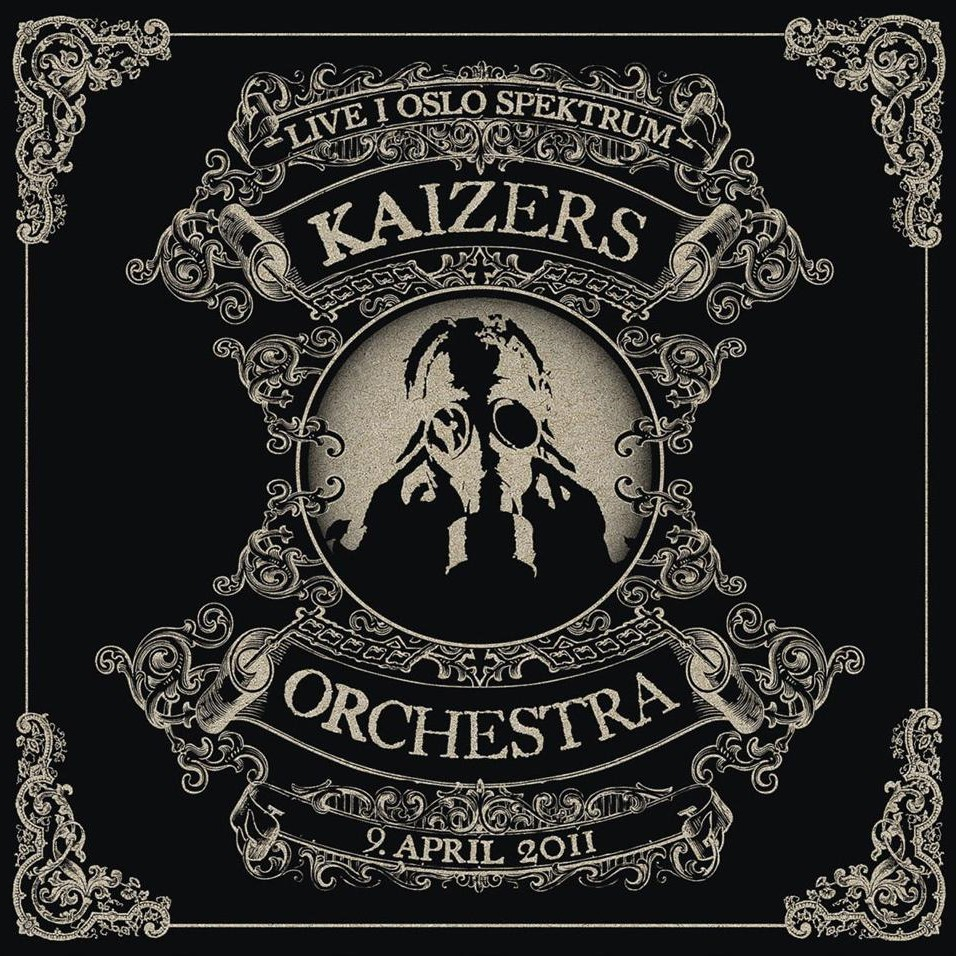
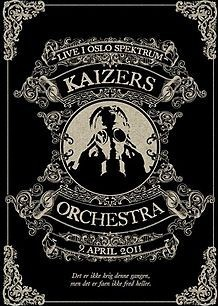

Live i Oslo Spektrum
|  |
|
|  |
|
Live i Oslo spektrum er Kaizers Orchestras tredje live-album og ble holdt den 9. april 2011. Konserten markerte slutten på Europa delen av Violeta Violeta Volume 1-turnee. Hele konserten ble filmet og utgitt på DVD som Viva la Vega. Konserten ble også gitt ut på CD, men der er det mindre sanger på grunn av kapasitetsbegrensninger.